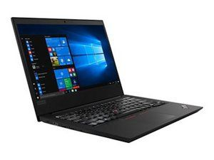
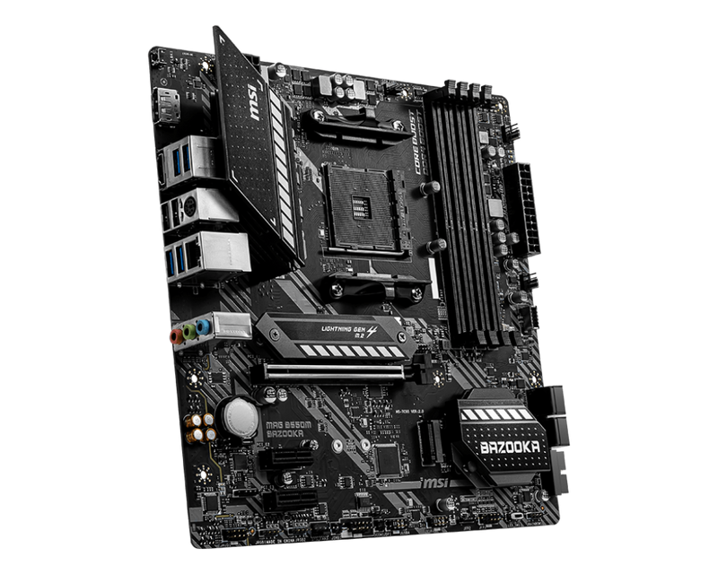

Análisis de Equipos de Estudio
Comparativa técnica entre nuestras plataformas de trabajo.
| Aspecto | Laptop Portátil | PC Escritorio (Legacy) | PC Escritorio (Workstation) |
|---|---|---|---|
| Modelo | ThinkPad E490 | Custom Build (FX Series) | Custom Build (Ryzen Series) |
| Marca / Fabricante | Lenovo | CPU: AMD MoBo: Gigabyte |
CPU: AMD GPU: NVIDIA MoBo: MSI |
| Generación | 8va Gen Intel Core (Whiskey Lake). | Arquitectura Piledriver (2012). Tecnología de 32nm. | Arquitectura Zen 3 (2022) + Pascal (GPU). Tecnología 7nm. |
| Internas (Software/Zócalo) |
|
|
|
| Uso y Cuidado |
Ideal para movilidad y ofimática. Cuidado: Evitar obstruir rejillas inferiores al usar en cama. |
Servidor casero o tareas medias. Cuidado: Monitorear temperaturas (El chipset 970 calienta) y limpieza de polvo. |
Gaming, Renderizado y Virtualización. Cuidado: Requiere buena fuente de poder y flujo de aire constante. |
|  |  |
 |